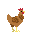
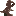
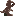
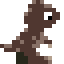
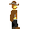

I have been drawing a few pixel art walking animations, lately. This has been a lot of fun. Animation adds some life to the artwork and can add some goofy fun to drawing.

One of the lessons I've learned doing this is that subtle changes work better than detailed changes, especially at low resolutions. I started this baby dinosaur with the version on the left. It has spots that seem to jump around. I tried to get too detailed and it ended up distracting.
The middle dinosaur is better, but it's spots still wiggle in an unnatural way. Once I removed the details from the spots, it became much easier to watch the dinosaur as a whole instead of getting distracted by weird movements. I could even add some depth by having two arms without making it feel like there was too much going on.



This reminds me of something "every frame a painting" says about Chuck Jones. He was a master of using the smallest movement possible to communicate. He is a wonderful animator and story teller, and there's a lot I can learn from him.
I made a few other animations, as well. This squid doesn't have much detail, but at least it's not distracting.
I was able to get a little more movement out of this cowboy, but I kept details light to focus more on the movement.
